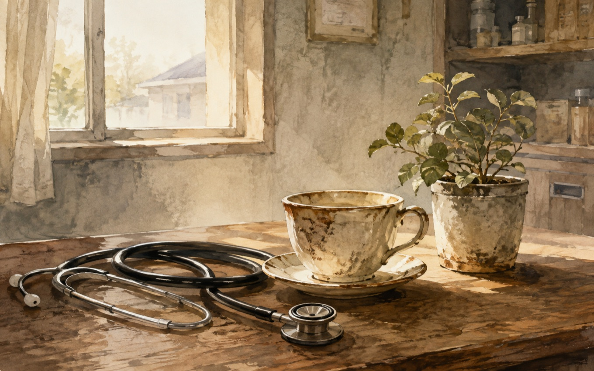

人生の壁／スピノザの診察室――外から与えられる価値と、自分の内側から感じる価値
この本について
養老孟司『人生の壁』と、夏川草介『スピノザの診察室』を立て続けに読んだ。ジャンルも文体もまったく違う2冊だけど、読み終えたあとに自分の中に残った感覚は、驚くほど似ていた。
外から与えられる価値、自分の内側から感じる価値
うまく言葉にしきれないけれど、共通して感じたのは、「外から与えられる価値」と「自分の内側から感じる価値」の対比だった。
外から与えられる価値というのは、お金、キャリア、地位、名誉、世間体、成長、自立、合理性、効率性、みたいなもの。どれも社会の中では大事だとされているし、実際に無視できないものでもある。でも、現代を生きていると、そうした価値が「大事」から「目指すべきもの」に変わり、さらに「それを目指していないと遅れている」「ちゃんとしていない」という暗黙のプレッシャーにまでなっている気がする。教育も仕事も、気づけばそうした価値観を前提に認識が作られていて、その中で多くの人が無自覚に追い立てられたり、自分で自分を苦しめたりしている。
今回読んだ2冊は、それに対して、もっと人間の飾らない姿や、根っこにある心のほうを大事にしているように感じた。背伸びしないこと。望みすぎないこと。目の前の人を大事にすること。焦らず、自分のペースで生きること。家族や日々の時間を丁寧に受け取ること。そういう、社会的には測りにくいけれど、本来かなり大事な価値を、2冊ともそれぞれのやり方で描いていたように思う。
人生の壁――自分の主観を、絶対視しない
『バカの壁』を昔読んだときも感じたけれど、養老孟司は一貫して、人はそれぞれ自分の主観の中でしか生きられない、という前提を持っているように感じる。世界は主観でできている人たちの集まりで、完全に同じ世界を見ている人などいない。だから、自分の思う正しさや、自分の見ている世界を絶対視しすぎないことが大事になる。
『人生の壁』では、そうした養老らしい人生観が、より人生全体に広がった形で語られていた印象がある。どこか東洋哲学的でもあり、「自分なんてとるにたらない」「多くを求めすぎない」「自然の流れの中にある自分を受け入れる」みたいな感覚が流れていた。それは決して投げやりではなく、むしろ、自分を大きく見積もりすぎないからこそ、ラクになれるという感じだった。
スピノザの診察室――「もっと上へ」ではなく、目の前の人と向き合う
夏川草介による『スピノザの診察室』は、タイトルに惹かれて読み始めたけれど、読み進めるうちに、名門病院でのキャリアや地位を捨てて、京都の町医者として生きる主人公の在り方に強く惹かれた。そこで描かれていたのは、キャリア、地位、名声といったものの表層性と、目の前の患者や家族との関係の中にある、もっと本質的な価値だった。
もちろん、キャリアや能力を否定しているわけではない。でも、それを積み上げた先に本当にあるべきものは何か、何のために働くのか、どういうふうに人と関わりたいのか、そういう問いが静かに流れていた。特に、「もっと上へ」「もっと評価されるほうへ」という方向ではなく、「いま目の前にいる人にどう向き合うか」「自分が納得できる生をどう生きるか」のほうに重心がある感じが、自分にはとても響いた。

自分がずっと、外の価値に追い立てられていた
この2冊を読んで一番強く感じたのは、自分自身がまさに、外から与えられる価値にかなり影響され、その中で自分を苦しめてきたのだ、ということだった。会社、仕事、お金、将来、不安、評価、成長。そうしたものに無自覚にさらされていて、しかもそれを「世間の当たり前」として真に受けて、自分の中に取り込んでしまっていた。その結果、「もっとちゃんとしなければ」「もっと成長しなければ」「もっと合理的でなければ」「もっと成果を出さなければ」というプレッシャーを、自分で自分に与えていたのだと思う。
頭では違う考え方も知っていたはずだった。東洋哲学などに触れる中で、多くを求めすぎないこと、執着しすぎないこと、いまを受け入れること、みたいな感覚には何度も出会ってきた。それでもまた、気づけば世間の価値観に引き戻されて、自分軸で動けなくなっていた。だからこの2冊を続けて読んだことも、偶然ではない気がした。自分の中のどこかが、もう一度そっちの感覚に戻ってこい、もう一度冷静に自分の人生を見つめ直してみてもいいんじゃないか、と働きかけてきたようにも感じた。
いま、大事にしたいこと
この2冊を読んであらためて思ったのは、自分が本当に大事にしたいのは、世間が与えてくる大きな価値ではなく、もっと手触りのある、自分の内側から感じられる価値なのだということだった。家族との時間。自分の時間。いまを大事にすること。何不自由なく日々を過ごせていること。それ自体が、すでにかなり奇跡的なことなのだと思う。
もちろん、お金や仕事や将来を全部無視して生きられるわけではない。でも、それらに振り回されすぎて、いまあるものの尊さや、身の丈にあった毎日の心地よさを見失うのは違う気がする。多くを求めすぎないこと。身の丈にあった毎日を過ごすこと。その中にある幸せを、ちゃんと感じること。それは、諦めではなく、むしろ自分の内側から納得して選ぶ生き方なのだと思う。
※本記事はNotionに書き溜めた読書メモをもとに、AIの編集サポートを受けて構成しています。